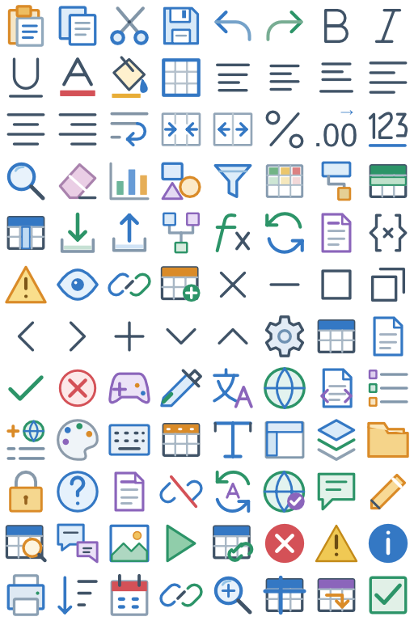

Tracefolio REPORTS & ISSUES
Tracefolio REPORTS & ISSUES아이콘 교체본 철회와 이전 디자인 복원
검증 대기사용자 화면에서 저장·최대화가 흰 사각형으로 보인 교체본을 철회하고 이전 아이콘으로 복원했습니다.
작업 결과
이전 컬러·화이트 atlas를 복원했습니다.417개의 실제 Unity 가져오기 검사에 저장·최대화·복원 내부 투명도 검사를 추가했습니다. 실제 Unity 화면 재촬영은 미실행입니다.
변경 내용
적용 내용
사용자가 전체 교체본보다 이전 버전을 선호한다고 정정하여 v5를 철회했습니다. 정상 리본은 이전 실제 Affinity v4 export로, 타이틀바는 v5 이전 white resource로 복원했습니다. 개별96개 PNG도 실제 Affinity에서 이전 원본을 자른 출력으로 갱신했습니다. 원본·목록·재설치 도구는 v4를 현재 버전으로 가리키므로 철회된 v5가 자동 재설치되지 않습니다. v5 원본과 이전 검증 기록은 보존했습니다.

복원된 아트 리소스입니다. 실제 Unity 화면 캡처가 아닙니다.
검증
| 항목 | 실제 결과 |
|---|---|
| 저장 중앙 alpha | 철회본255 → 복원본0 |
| 최대화 중앙 alpha | 철회본255 → 복원본0 |
| 복원 중앙 alpha | 철회본255 → 복원본0 |
| Unity6000.0.83f1 batchmode | 417검사 통과·실패0 |
| 기존414검사의 한계 | 흰색인지·여백·크기만 확인하여 내부가 메워진 오류를 검출하지 못했음 |
| 새 검사 | 실제 import texture의 세 아이콘 내부 alpha가0인지 검증 |
| 이전 디자인 | 컬러atlas는 이전 export와 파일 바이트 동일하게 복원 |
내부 공간 비교 · Unity 실제 결과 · 복원 white atlas

원인: 모든 채움색을 흰색으로 바꾼 native white 제작 과정에서 서로 다른 채움 영역이 합쳐졌습니다. 실제 중앙 alpha255와 복원 후0을 확인했습니다. 실제 UI 가독성 확인 없이 palette 검사 통과를 충분한 검증처럼 보고한 것은 잘못이었습니다.
남은 사항
실제 Unity 타이틀바·홈 탭 재촬영은 node_repl 컴퓨터 사용 도구 미제공으로 미실행입니다. 사용자 제공 화면으로 실패 상태를 확인했으며 제공 이미지는 외부에 게시하지 않았습니다. 이번 작업은 기존 파일의 복원이며 다른 도구로 아이콘을 새로 그리지 않았습니다. 프로젝트 AGENTS.md에 흰색 아이콘 내부 공간·실제 크기 검사 규칙을 추가했습니다. 전역 지침의 실제 출력 윤곽·가독성 검증 규칙과 중복되므로 전역 추가 없음.
작업 시간
- 제안 시간: 5–10분. 진행 중 사용자 요청에 따라 전체 교체본을 철회하고 이전 버전 복원으로 변경했습니다.
- 실제로 완료된 시간: 2026-10-31 21:20:29 KST 시작, 복원·비대화형 검증 21:26:36 KST. 공개 배포 별도 확인.
- XERJ: 사용 — XERJ TemplateIcons titleBar whiteAtlas 검색 후 실제 TemplateIcons·WorkbookViewerChrome·native PNG 확인